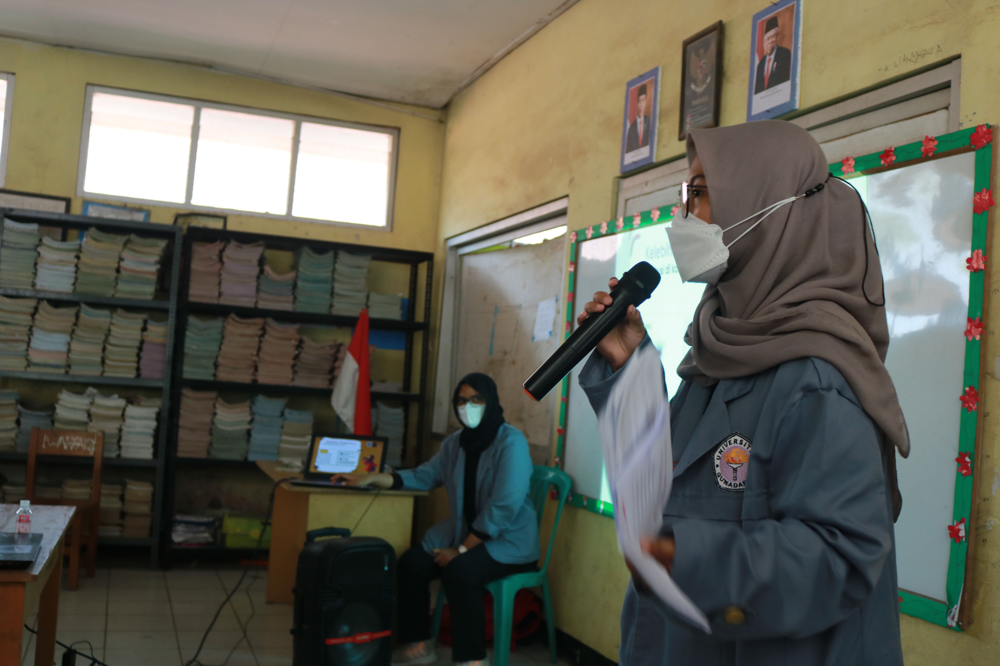
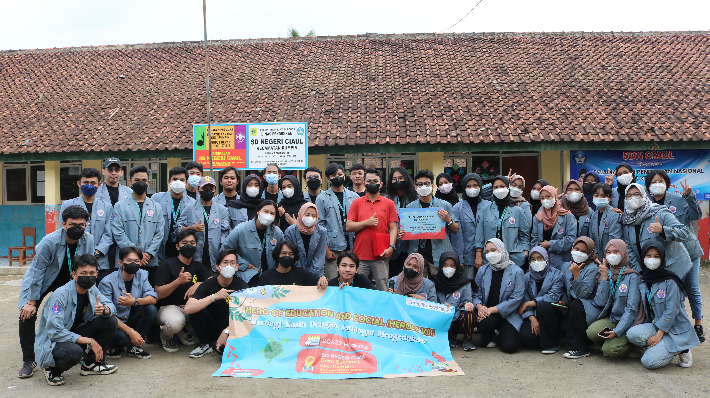
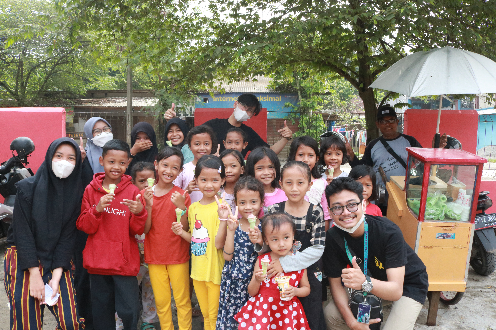

I volunteered in the Creative Marketing Division for HEROES VIII, a flagship program of BEM FIKTI Gunadarma University 2021/2022. The program focused on improving school infrastructure at SD Negeri Ciaul, Bogor, and raising awareness about health and technology. I contributed to entrepreneurship activities for event funding and taught basic technology skills to elementary school students.
December 2021 - May 2022
Joined Creative Marketing Division
Conducted entrepreneurship activities and funding events
Taught elementary students as part of social projects
Closing ceremony and event evaluation
Being a volunteer allowed me to develop communication, creativity, and leadership skills. Teaching young students was a humbling and inspiring experience that deepened my passion for education and teamwork.